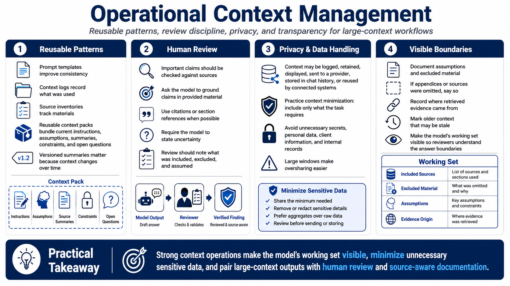

Operational Practices and Review
Connecting to LMS... Progress: in progress

Narration
Operational context management starts with reusable patterns. Prompt templates, context logs, source inventories, reusable context packs, and versioned summaries make large-context work more repeatable. A context pack might include current instructions, project assumptions, key source summaries, known constraints, and open questions. Versioning matters because context changes over time.
Human review remains necessary. Large context can produce impressive summaries, but reviewers should verify important claims against source material. Ask the model to ground claims in provided sources, cite sections when possible, and state uncertainty. For professional workflows, the review process should include what material was included, what was excluded, and which assumptions shaped the answer.
Privacy and sensitive data handling are central. Context may be logged, retained, displayed, sent to a provider, stored in chat history, or reused by surrounding systems depending on the tool. Context minimization means including only what the task requires and avoiding unnecessary secrets, personal data, client information, or internal records. Large windows make it easier to overshare.
Documenting assumptions and excluded material improves trust. If a summary is based on three policies but excludes two appendices, say so. If retrieved evidence came from a specific index, record it. If old context may be stale, mark it. Good context operations make the model's working set visible, so reviewers can understand the boundaries of the answer.